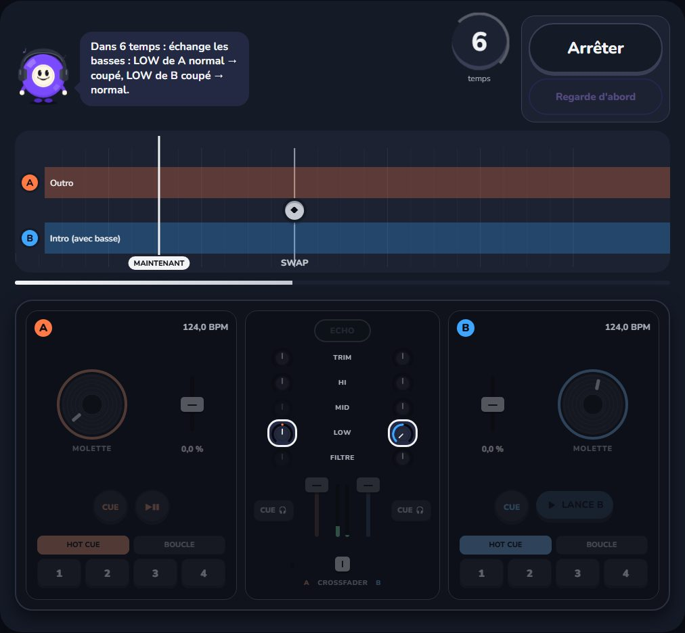
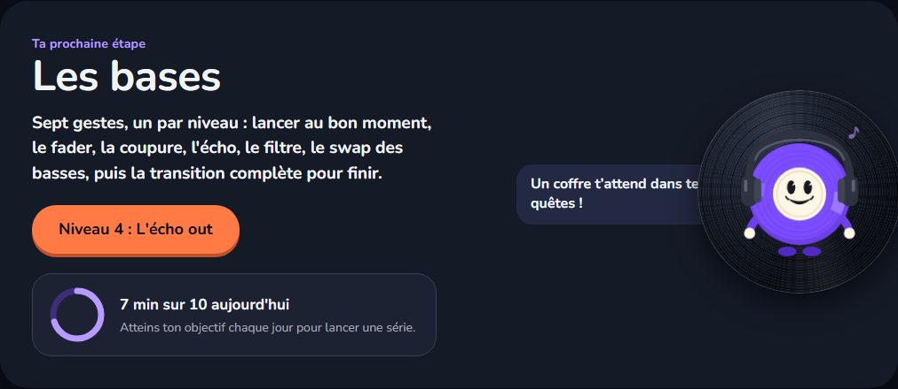
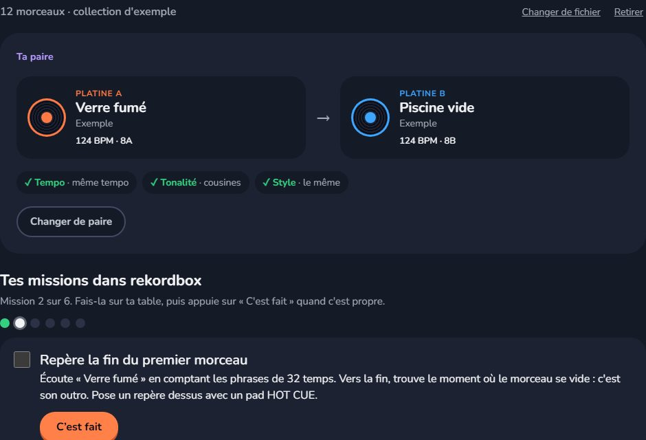

Apprends à mixer sur ta table, un geste à la fois.
Tu as une table et tu n'y connais rien ? En deux semaines, tu fais tes premières vraies transitions propres, avec ta musique.
Gratuit pour apprendre · rien à installer · compte facultatif
3 exercices gratuits · puis 4,99 € par mois, sans engagement · rien à installer
Le site écoute ta table et te dit ce qui cloche.
Apprendre
Branche ta table en USB. Les gestes arrivent sur une piste qui défile, comme dans un jeu de rythme : lancer B, monter le fader, échanger les basses. Tu les fais sur ta vraie table, et le site te note au temps près.
Raté ? Il te dit pourquoi, par exemple « B est parti 8 temps trop tôt », et te montre ton geste à côté du geste idéal.

S'entraîner chaque jour
Un objectif de 5, 10 ou 15 minutes par jour, une série de jours à tenir, un défi du jour, des mini-sets de trois transitions d'affilée et un quiz pour retenir les mots du DJ.

Passer au vrai
Importe ta collection rekordbox : le site te propose des paires de tes morceaux qui s'enchaînent bien, puis des missions à faire dans rekordbox, avec ta musique.

Trois parcours, selon où tu en es.
Tu n'as jamais mixé. Un petit tour pour apprendre à compter la musique, puis sept gestes, un par niveau, chaque bouton présenté juste avant de s'en servir : le bon moment, le fader, la coupure, l'écho, le filtre, le swap des basses, puis la transition complète pour finir.
Tu sais lancer deux morceaux. Pas d'explications imposées, tout est ouvert : les sept gestes en Mode Expert (sans compte à rebours, notés à la milliseconde), puis les combos, le calage et un vrai set de plusieurs morceaux.
Tu mixes déjà. On attaque direct par un vrai set : plusieurs morceaux enchaînés sans que la musique s'arrête, noté sur 100. Puis le calage sans SYNC, les combos sans filet et le Mode Expert.
- Une table DJ branchée en USB, et un casque ou des enceintes. Le site reconnaît tout seul une quinzaine de tables de débutant (Pioneer, Hercules, Numark, Roland, Reloop) ; une autre table se règle en une minute.
- Un ordinateur avec Chrome ou Edge.
- Pas encore de table ? Tu peux essayer à la souris.
Combien ça coûte ?
Les 7 leçons « Comprendre », sans table. Tes 3 premiers exercices avec ta table. Le défi du jour et un tuto.
Ou 49,99 € par an, sans engagement. Les 7 chapitres, tous les tutos de Vini, l’entraînement et Passer au vrai.
C'est gratuit ?
Oui : les leçons, l'entraînement et Comprendre sont gratuits.
C'est gratuit ?
Pour commencer, oui : les 7 leçons « Comprendre », tes 3 premiers exercices avec ta table, le défi du jour et un tuto sont gratuits. La suite (les 7 chapitres, tous les tutos, l'entraînement, Passer au vrai) est dans DJingood Pro, à 4,99 € par mois ou 49,99 € par an, sans engagement : tu arrêtes en deux clics.
Faut-il créer un compte ?
Non, tu peux tout faire sans compte : ta progression reste alors dans ton navigateur, sur cet ordinateur, et elle n'est envoyée nulle part. Si tu en crées un (avec une adresse e-mail ou avec Google), tes étoiles, tes XP et tes badges te suivent d'un appareil à l'autre, et tu ne perds rien en changeant d'ordinateur.
Avec quelle musique ?
Les niveaux se jouent sur de vrais morceaux de house libres de droits, choisis sur Pixabay. Tu peux aussi choisir des morceaux fabriqués par le site, en house, techno ou afro. Ensuite, « Passer au vrai » te fait travailler avec ta propre musique dans rekordbox.
Ça remplace rekordbox ?
Non. DJingood t'apprend les gestes ; rekordbox reste le logiciel avec lequel tu mixes pour de vrai.
Et si j'ai une autre table ?
Le site reconnaît tout seul une quinzaine de tables de débutant (Pioneer DDJ-FLX4, DDJ-400, DDJ-SB3, DDJ-200 et XDJ-RR, Hercules Inpulse 200, 300 et 500 et Starlight, Numark Mixtrack Platinum FX et Pro FX, Party Mix et DJ2GO2 Touch, Roland DJ-505, Reloop Mixage). Si tu branches une table qu'il ne connaît pas encore, il te propose de la régler pas à pas : il te montre chaque commande, tu la bouges, il la reconnaît. Une commande que ta table n'a pas se fait à la souris. Les réglages de ces tables viennent de leur documentation : dis-nous si quelque chose ne marche pas avec la tienne.
Sur téléphone ?
Oui, pour commencer : sur téléphone, DJingood propose sept petites leçons sans table pour apprendre à compter la musique (le temps, la phrase, les parties d'un morceau…), au doigt. Pour les gestes sur ta table, il faut un ordinateur avec Chrome ou Edge, la table branchée en USB.
Qu'est-ce que DJingood sait de moi ?
Presque rien : pas de publicité, pas de cookie. Le site compte ses visites sans savoir qui tu es, et ton avis ne part que si tu l'envoies. Tout est expliqué dans Ce que DJingood garde sur toi.